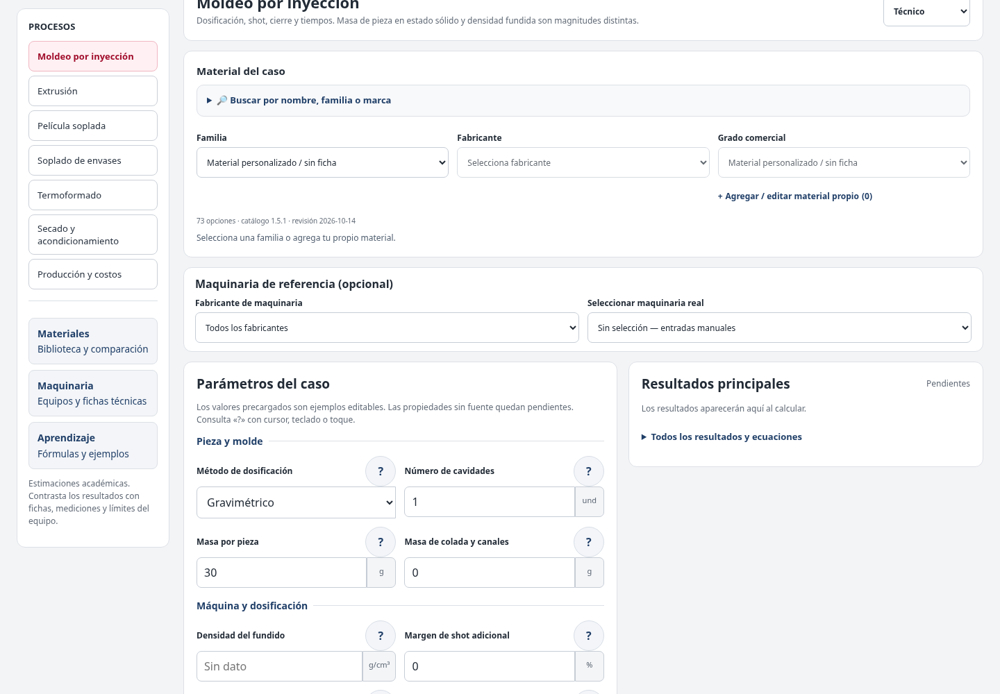
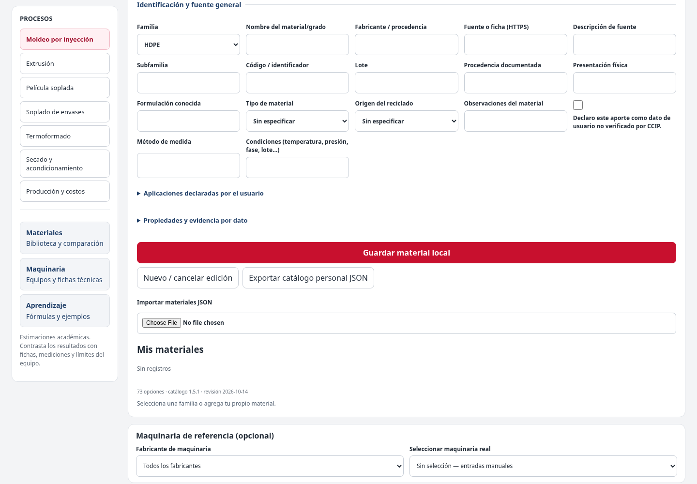
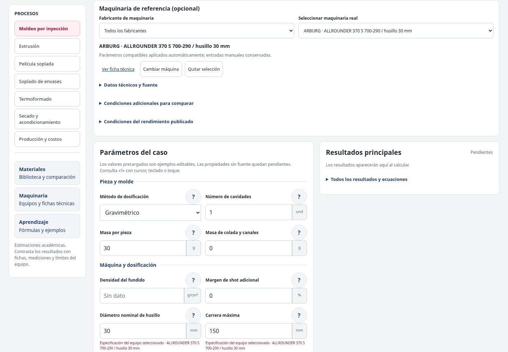
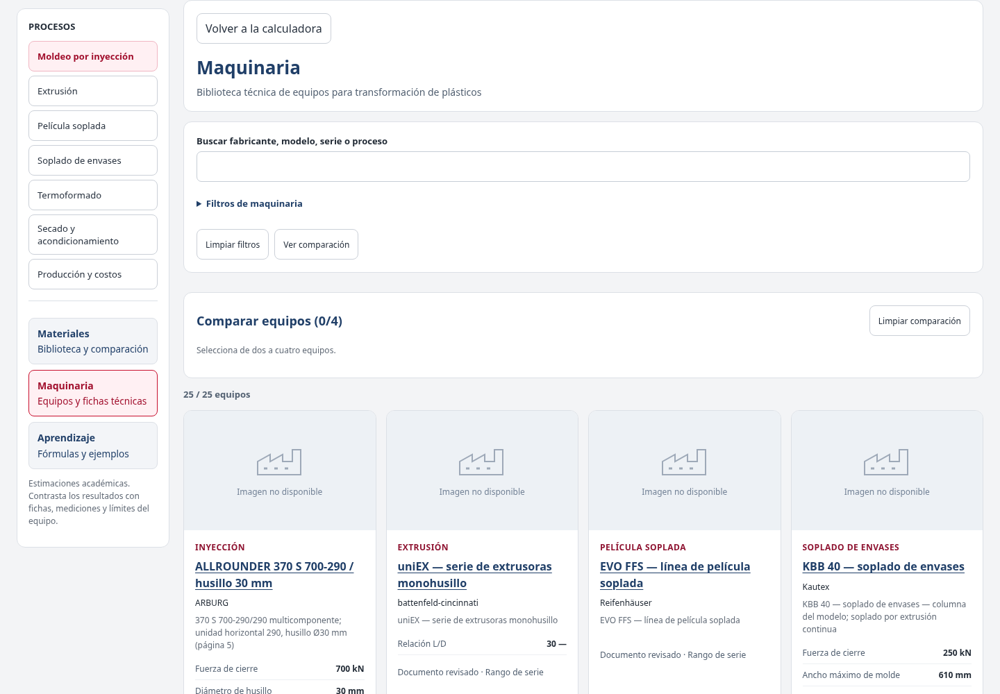
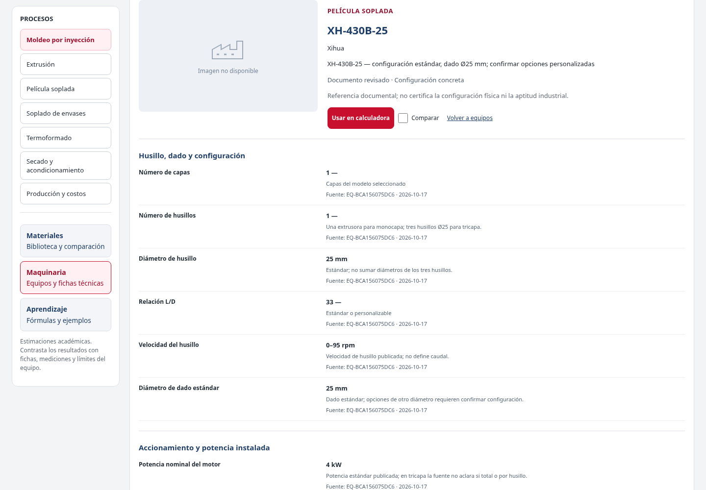

Encuentra lo que necesitas. Sin recorrer 19 capítulos.
Selecciona una función y sigue los pasos del capítulo. Las capturas pertenecen a la interfaz real de CCIP; nunca se sustituyen por fotografías decorativas.
Siete procesos · Tres niveles
Empieza con un cálculo
Selecciona el proceso y el nivel, incorpora material y maquinaria si corresponde, introduce los datos y pulsa Calcular.
Capturas reales del interfaz CCIP (versión de octubre de 2026). Las capturas se cargan desde el repositorio oficial y requieren conexión a Internet. No se usan fotografías decorativas ni imágenes de otras aplicaciones.
CAPÍTULO 01 DE 19
Orientación y alcance
Siete procesos, tres niveles y bibliotecas técnicas.
En 3 pasos
Selecciona uno de los siete procesos.
Consulta la biblioteca de materiales y maquinaria.
Revisa siempre las unidades, advertencias y fuentes.
Captura real de CCIP
1 / 2

No se pudo cargar la captura. Comprueba tu conexión.
Interfaz real de CCIP: procesos, materiales, maquinaria y campos de cálculo
Ver instrucciones completas, tablas y advertencias
Qué es CCIP, a quién está dirigida y cómo interpretar sus resultados.
CCIP es una calculadora web académica para estimar parámetros de siete procesos de transformación de termoplásticos. Permite estudiar la influencia de la geometría, propiedades documentadas, condiciones de operación y datos de maquinaria; no sustituye una ficha de fabricante, un ensayo de laboratorio ni un diseño industrial validado.
Incluye
Uso principal
Calculadora
Entrar datos del caso, calcular y consultar resultados y ecuaciones.
Materiales
Explorar grados, fuentes, propiedades, formulaciones y comparaciones.
Maquinaria
Consultar fichas de equipos, filtrar, comparar y usar un modelo como referencia.
Aprendizaje
Ver explicaciones, fórmulas y ejemplos organizados por proceso y nivel.
Historial y exportaciones
Conservar cálculos en el navegador y descargar documentos de resultados.
Este manual refleja las funciones verificadas en el código de referencia f711634e (bibliotecas de materiales y maquinaria). Si la plataforma se actualiza, algunos nombres, ubicaciones o cantidades pueden cambiar; consulta la versión indicada en la aplicación.
Capturas: aplicación CCIP, rama de bibliotecas UX, commit f711634e
CAPÍTULO 02 DE 19
Inicio rápido: primer cálculo
Selecciona proceso, nivel y parámetros. Luego pulsa Calcular.
En 3 pasos
Elige un proceso en el menú Procesos.
Selecciona Básico, Técnico o Avanzado.
Introduce los parámetros de tu caso y pulsa «Calcular».
Captura real de CCIP
1 / 1
No se pudo cargar la captura. Comprueba tu conexión.
Ver instrucciones completas, tablas y advertencias
Entiende la estructura antes de introducir datos.
Organización de la plataforma
La calculadora es la vista inicial. El menú de bibliotecas contiene Materiales, Maquinaria y Aprendizaje; «Calculadora» no es un botón independiente. Elegir un proceso abre su módulo de cálculo. Los botones Atrás y Adelante del navegador y los enlaces directos permiten recuperar rutas cuando la vista lo soporta.
Tres niveles de cálculo
Nivel
Objetivo
Recomendación
Básico
Operaciones iniciales con los datos esenciales.
Úsalo para entender magnitudes, unidades y balances básicos.
Técnico
Añade propiedades o condiciones necesarias para cálculos más completos.
Indica densidades y datos de material solamente si conoces su origen.
Avanzado
Incluye geometrías, potencias, presiones, rendimientos o parámetros adicionales según proceso.
Comprueba supuestos y datos experimentales antes de interpretar el resultado.
Los campos de niveles superiores no deben afectar cálculos realizados en niveles inferiores cuando no estén activos. Al cambiar de proceso puedes conservar un borrador de esa sesión según el navegador, pero no debe sustituir el guardado explícito.
Guardado temporal y almacenamiento
La aplicación usa el almacenamiento del navegador para borradores de pestaña y el historial local de cálculos. Las preferencias de idioma también pueden conservarse. Este comportamiento depende de que el navegador permita almacenamiento; modo privado, limpieza de datos o cambios de dispositivo pueden eliminar esos registros.
Capturas: aplicación CCIP, rama de bibliotecas UX, commit f711634e
CAPÍTULO 04 DE 19
Seleccionar un material
Familia → fabricante → grado comercial, con ficha y fuentes.
En 3 pasos
Selecciona Familia, Fabricante y Grado comercial.
Comprueba procedencia, fase y condiciones documentadas.
Introduce manualmente las propiedades ausentes.
Captura real de CCIP
1 / 2
No se pudo cargar la captura. Comprueba tu conexión.
Ver instrucciones completas, tablas y advertencias
Cómo usar la biblioteca sin confundir propiedades medidas y estimadas.
Abre «Material del caso». Si lo necesitas, utiliza «Buscar por nombre, familia o marca».
Selecciona la familia de polímero.
Selecciona fabricante y después grado comercial, cuando aparezcan opciones documentadas.
Examina el origen y las condiciones de cada propiedad: fase, temperatura, ensayo, unidad y grado.
Revisa los campos precargados y los que continúan pendientes. Una propiedad no respaldada no se rellena por pertenecer a una familia.
Si el material no existe o carece de una propiedad válida, introduce los datos manualmente y conserva su procedencia.
Concepto
Qué significa
73 identidades originales
64 grados comerciales y 9 perfiles genéricos; no son 73 fichas íntegramente verificadas.
Grado comercial
Producto documentado del fabricante, asociado a fuentes y condiciones.
Perfil genérico
Familia útil para trabajar manualmente; no implica valores de ficha propios.
Propiedad estimada
Referencia aproximada explícita, no medición certificada del grado.
Propiedad manual
Dato ingresado por el usuario, cuya validez depende de sus fuentes y condiciones.
Densidades y reología
No sustituyas densidad del fundido por densidad sólida. Tampoco confundas densidad aparente de pellets con densidad del material macizo. MFR (g/10 min) y MVR (cm³/10 min) no son equivalentes y deben compararse con temperatura, carga y norma compatibles.
Capturas: aplicación CCIP, rama de bibliotecas UX, commit f711634e
CAPÍTULO 05 DE 19
Crear y gestionar material propio
Abre «+ Agregar / editar material propio» bajo Grado comercial.
En 3 pasos
Pulsa «+ Agregar / editar material propio».
Completa la identificación y solamente las propiedades conocidas.
Guarda, comprueba el contador y exporta tu JSON como respaldo.
Captura real de CCIP
1 / 2

No se pudo cargar la captura. Comprueba tu conexión.
Editor de materiales propios abierto dentro de CCIP
Ver instrucciones completas, tablas y advertencias
El editor personal complementa el catálogo; no modifica fichas originales.
En «Material del caso», busca «+ Agregar / editar material propio» debajo de «Grado comercial».
Abre el editor, que se despliega en un área amplia bajo los selectores.
Indica familia, nombre del grado, fabricante o procedencia y fuente general cuando exista.
Añade tipo de material, origen de reciclado y formulación conocida cuando corresponda.
Abre «Propiedades y evidencia por dato» y registra solo magnitudes conocidas con unidad, fase, condiciones, fuente y método.
Guarda mediante «Guardar material local». Verifica el contador de materiales propios.
Puedes volver a editar o eliminar un registro, exportar tu catálogo personal como JSON o importar un JSON compatible.
Para densidad aparente debe identificarse la presentación (por ejemplo pellets o polvo). Para Cp debe existir evidencia térmica suficiente. No completes arbitrariamente propiedades desconocidas.
Proponer una contribución pública
En Materiales puede encontrarse la opción «Enviar a GitHub / proponer actualización». Este flujo prepara información y abre un formulario de GitHub; el usuario debe revisarla y enviarla. Preparar una propuesta no significa que esté recibida, aprobada o publicada. La automatización y revisión dependen de la configuración activa del repositorio.
Capturas: aplicación CCIP, rama de bibliotecas UX, commit f711634e
CAPÍTULO 06 DE 19
Seleccionar maquinaria de referencia
Las precargas compatibles se aplican automáticamente sin sustituir datos manuales.
En 3 pasos
Despliega «Maquinaria de referencia (opcional)».
Selecciona fabricante y modelo concreto.
Revisa qué parámetros se aplicaron y cuáles son manuales.
Captura real de CCIP
1 / 2

No se pudo cargar la captura. Comprueba tu conexión.
Máquina de referencia seleccionada y campos compatibles del caso
Ver instrucciones completas, tablas y advertencias
Uso del selector compacto y precarga compatible.
«Maquinaria de referencia (opcional)» permite trabajar tanto con datos manuales como con un modelo documentado. Si no deseas utilizar maquinaria precargada, deja «Sin selección — entradas manuales» y continúa normalmente.
Despliega la selección rápida de maquinaria cuando la necesites.
Filtra por fabricante y elige el modelo/variante concreta.
Revisa el resumen y usa «Ver ficha técnica» para comprobar especificaciones y fuentes.
Comprueba qué campos se rellenaron automáticamente. Solo se incorporan valores publicados, compatibles y seguros donde no prevalezcan datos manuales.
Si cambias de equipo, revisa las propiedades actualizadas y cualquier advertencia.
Para volver a trabajar manualmente, utiliza «Quitar selección» o «Sin selección». Los datos manuales se preservan.
La selección automática NO confirma que tu equipo físico sea idéntico a la variante del catálogo. Una ficha puede describir capacidades nominales, rangos de serie y condiciones que no aplican simultáneamente.
Origen de dato
Comportamiento esperado
Dato manual
Se conserva frente a una precarga automática incompatible o posterior.
Dato automático de máquina anterior
Se puede retirar cuando cambias o quitas la referencia, si no fue editado manualmente.
Rango de serie
Se muestra como referencia, no como límite certificado de un equipo particular.
Propiedad no documentada
Permanece vacía o pendiente; no se inventa.
Capturas: aplicación CCIP, rama de bibliotecas UX, commit f711634e
CAPÍTULO 07 DE 19
Biblioteca de maquinaria
Busca modelos, consulta fichas y compara hasta cuatro equipos.
En 3 pasos
Entra a «Maquinaria» desde el menú.
Filtra o busca por modelo y consulta la ficha.
Compara equipos o usa «Usar en calculadora».
Captura real de CCIP
1 / 3

No se pudo cargar la captura. Comprueba tu conexión.
Biblioteca real de maquinaria y tarjetas de equipos
Ver instrucciones completas, tablas y advertencias
Consulta independiente de fichas, filtros, comparaciones y fuentes.
La opción «Maquinaria» del menú abre una biblioteca independiente de la calculadora. En la referencia revisada existen 25 registros documentales, de los que 20 corresponden al mínimo de máquinas concretas validado para el catálogo; los demás incluyen series o referencias que no deben contarse como unidades individuales.
Selecciona Maquinaria en el menú.
Utiliza el buscador por modelo, fabricante, serie o proceso.
Abre «Filtros de maquinaria» si quieres limitar por proceso, fabricante, tipo, variante o estado documental.
Selecciona «Ver ficha» para consultar características agrupadas, condiciones y enlaces de origen.
Marca «Comparar» en dos, tres o cuatro tarjetas para construir una tabla comparativa documental.
Desde la ficha, pulsa «Usar en calculadora» para abrir el proceso adecuado con la máquina seleccionada.
Si necesitas compartir documentación, exporta la ficha o la comparación en PDF, Excel o JSON según las opciones visibles.
Equipo de referencia
Proceso correcto
Moiron M2-I
Moldeo por inyección
XH-430B-25
Película soplada, no soplado de envases
La comparación indica cuándo faltan datos o no pueden equipararse: diferentes procesos, condiciones incompatibles, rangos, dimensiones o unidades. No produce un ranking industrial de “mejor máquina”.
Capturas: aplicación CCIP, rama de bibliotecas UX, commit f711634e
CAPÍTULO 08 DE 19
Guía por proceso: Inyección
Dosifica por masa o volumen y revisa el límite del equipo.
En 3 pasos
Selecciona Inyección y método gravimétrico o volumétrico.
Revisa masa o volumen de disparo y propiedades compatibles.
Compara los resultados con la ficha del equipo.
Captura real de CCIP
1 / 1
No se pudo cargar la captura. Comprueba tu conexión.
Formulario de inyección con una máquina de referencia seleccionada
Ver instrucciones completas, tablas y advertencias
Distingue masa, volumen, cavidad, máquina y reserva de operación.
Nivel
Entradas orientativas
Básico
Método gravimétrico o volumétrico; cavidades; masa/volumen de pieza y de canales.
Técnico
Densidad del fundido cuando sea necesaria; margen de shot; diámetro de husillo; carrera máxima.
Avanzado
Colchón residual; área proyectada; presión media de cavidad; factor de seguridad; caudal y plastificación.
Selecciona Inyección y el método de dosificación (masa o volumen).
Introduce las magnitudes que corresponden a tu caso; los datos iniciales de ejemplo son editables.
Si utilizas volumen, comprueba que sea volumen equivalente de fundido a condiciones de proceso; no sustituyas arbitrariamente valores de estado sólido.
Si eliges una máquina, verifica en su ficha diámetro, carrera y las unidades de capacidad.
Pulsa Calcular y consulta shot, datos geométricos y, cuando corresponda, cierre, llenado y plastificación.
En avanzado puede utilizarse el perfil opcional L1/L2/L3, con porcentajes editables que deben totalizar 100 %. Las coordenadas requieren un origen y sentido definidos. No confundas margen matemático de shot con colchón residual del husillo.
Capturas: aplicación CCIP, rama de bibliotecas UX, commit f711634e
CAPÍTULO 09 DE 19
Guía por proceso: Extrusión
Define geometría y velocidad; calcula caudal o demanda geométrica.
En 3 pasos
Selecciona lámina o tubo e introduce dimensiones.
Define velocidad y densidad cuando aplique.
Interpreta la producción nominal bajo sus hipótesis.
Ver instrucciones completas, tablas y advertencias
Balances para lámina o tubo, según la geometría seleccionada.
Nivel
Entradas orientativas
Básico
Geometría lámina/tubo; dimensiones; velocidad de línea.
Técnico
Densidad sólida del producto; porcentaje de pérdidas.
Avanzado
Energía específica medida; inventario retenido para residencia nominal.
Selecciona Extrusión y decide si el producto es lámina o tubo.
Introduce las dimensiones finales en milímetros y la velocidad lineal en m/min.
Cuando se solicite masa o caudal, proporciona densidad coherente del producto y pérdidas cuando correspondan.
Introduce consumo energético específico únicamente si cuentas con un valor medido o respaldado.
Consulta resultados y ecuaciones; no deduzcas productividad real de RPM sin datos adicionales.
Capturas: aplicación CCIP, rama de bibliotecas UX, commit f711634e
CAPÍTULO 10 DE 19
Guía por proceso: Película soplada
Introduce ancho plano, espesor y velocidad; revisa BUR y DDR.
En 3 pasos
Introduce ancho plegado, espesor y velocidad.
Añade densidad y dado si dispones de datos reales.
Consulta BUR, DDR geométrico y restricciones.
Captura real de CCIP
1 / 1

No se pudo cargar la captura. Comprueba tu conexión.
Ficha de película soplada XH-430B-25 dentro de la biblioteca de CCIP
Ver instrucciones completas, tablas y advertencias
Ancho plegado, espesor, BUR y relación DDR geométrica.
Nivel
Entradas orientativas
Básico
Ancho plegado; espesor de una pared en µm; velocidad de arrastre.
Técnico
Densidad de película; diámetro del dado.
Avanzado
Abertura del dado para DDR geométrico ideal.
Selecciona Película soplada.
Introduce el ancho del tubo aplanado, el espesor de UNA pared y la velocidad de línea.
Si necesitas caudal másico, aporta densidad sólida del producto.
Si necesitas BUR, indica diámetro de dado documentado; DDR requiere la abertura del dado cuando aplique.
Usa la ficha XH-430B-25 solamente en este proceso y comprueba si su variante coincide con la referencia deseada.
Capturas: aplicación CCIP, rama de bibliotecas UX, commit f711634e
CAPÍTULO 11 DE 19
Guía por proceso: Soplado de envases
Define geometría nominal y propiedades si corresponden.
En 3 pasos
Introduce diámetro y altura aproximados del envase.
Añade espesor y densidad documentados.
Consulta masa y volumen geométricos orientativos.
Ver instrucciones completas, tablas y advertencias
Aproximación inicial de envase cilíndrico y sus condiciones.
Nivel
Entradas orientativas
Básico
Diámetro del cuerpo; altura del cuerpo cilíndrico.
Técnico
Espesor de pared supuesto; densidad sólida.
Avanzado
Diámetro del parisón; producción en envases/h.
Selecciona Soplado de envases.
Indica diámetro exterior y altura correspondiente a la geometría aproximada.
Si dispones de medidas de pared y densidad, utilízalas en el nivel correspondiente.
En avanzado añade parisón y producción si deseas estudiar relaciones geométricas y productividad.
Revisa los avisos de uniformidad de pared y geometría; la capacidad útil del envase no equivale al volumen exterior.
Capturas: aplicación CCIP, rama de bibliotecas UX, commit f711634e
CAPÍTULO 12 DE 19
Guía por proceso: Termoformado
Introduce lámina, espesor y ciclo para estimar consumos.
En 3 pasos
Introduce ancho, largo, espesor y tiempo de ciclo.
Añade cavidades y densidad cuando corresponda.
Consulta consumo teórico y producción.
Ver instrucciones completas, tablas y advertencias
Área consumida, espesor ideal y capacidad por ciclo.
Nivel
Entradas orientativas
Básico
Ancho y largo de recorte; espesor inicial; tiempo de ciclo.
Técnico
Número de cavidades; densidad de la lámina.
Avanzado
Relación de áreas superficial formada/inicial.
Selecciona Termoformado.
Introduce ancho y largo del recorte en milímetros, espesor de la lámina y tiempo real de ciclo.
Agrega cavidades y densidad cuando corresponda.
En avanzado define la relación geométrica de áreas únicamente si dispones de las medidas necesarias.
Contrasta el área y la profundidad con los límites documentados de la máquina seleccionada.
Capturas: aplicación CCIP, rama de bibliotecas UX, commit f711634e
CAPÍTULO 13 DE 19
Guía por proceso: Secado y acondicionamiento
Ingresa caudal real y comprueba tiempo, densidad aparente y Cp.
En 3 pasos
Introduce el caudal real en kg/h, nunca lo infieras del grado.
Selecciona resina documentada y confirma tiempo.
Revisa datos pendientes y límites del modelo térmico.
Ver instrucciones completas, tablas y advertencias
Residencia y calentamiento sensible con trazabilidad documental.
Nivel
Entradas orientativas
Básico
Caudal real de polímero (kg/h) y tiempo recomendado de residencia (h).
Técnico
Densidad aparente del material a granel (kg/L), con presentación y condiciones.
Avanzado
Temperatura inicial y final; Cp medio del sólido respaldado para el intervalo.
Selecciona Secado y acondicionamiento.
Selecciona un grado con secado documentado, cuando esté disponible, y revisa temperatura/tiempo y condiciones.
Introduce manualmente el caudal real de alimentación: no se debe inferir del material.
En nivel Técnico verifica la densidad aparente, su presentación física y la evidencia.
En Avanzado comprueba que la temperatura inicial de 25 °C es un supuesto editable. Añade Cp medio válido y temperatura final solo con evidencia suficiente.
Interpreta resultados pendientes de Cp o densidad aparente como falta de datos; no como cero.
Cálculos de referencia: masa en tolva M = caudal × residencia; volumen nominal teórico V = M / densidad aparente; potencia sensible ideal P = caudal × Cp × (Tfinal − Tinicial)/3600.
Capturas: aplicación CCIP, rama de bibliotecas UX, commit f711634e
CAPÍTULO 14 DE 19
Guía por proceso: Producción y costos
Calcula productividad y costos directos con hipótesis claras.
En 3 pasos
Introduce ciclo, cavidades y masa por pieza.
Añade rechazos y costos documentados.
Calcula y revisa qué costos no se incluyen.
Ver instrucciones completas, tablas y advertencias
Estimaciones parciales basadas en ciclos, mermas y datos económicos.
Nivel
Entradas orientativas
Básico
Tiempo de ciclo; piezas por ciclo; masa por pieza.
Técnico
Porcentaje de rechazos; costo del material por kg.
Avanzado
Potencia media consumida; tarifa eléctrica; mano de obra directa por hora.
Selecciona Producción y costos.
Introduce el ciclo real y la cantidad de piezas nominales.
Define masa por pieza, rechazos y precio de material en unidades y moneda consistentes.
En avanzado agrega potencia MEDIA consumida (no potencia nominal instalada), tarifa y mano de obra.
Si reutilizas un cálculo de historial, revisa que su contexto y fecha correspondan a tu caso.
Consulta el alcance de cada costo calculado; identifica gastos indirectos que no forman parte del modelo.
Capturas: aplicación CCIP, rama de bibliotecas UX, commit f711634e
CAPÍTULO 15 DE 19
Interpretar resultados y aprender
Abre ecuaciones, comprueba unidades y atiende advertencias.
En 3 pasos
Pulsa «Calcular» y revisa Resultados principales.
Abre «Todos los resultados y ecuaciones».
Interpreta pendientes y advertencias antes de usar el dato.
Captura real de CCIP
1 / 1
No se pudo cargar la captura. Comprueba tu conexión.
Ver instrucciones completas, tablas y advertencias
Cómo guardar, recuperar y compartir resultados.
Después de un cálculo, pulsa «Guardar cálculo».
Escoge «Guardar como nuevo», escribe un nombre y confirma.
Para sustituir un registro del mismo proceso, selecciona «Sobrescribir existente» y marca la confirmación explícita.
En «Historial local», usa Recuperar, Renombrar, Eliminar o Exportar junto al cálculo correspondiente.
Para comparar cálculos guardados, utiliza el apartado Comparar resultados guardados, respetando compatibilidad entre módulos.
Para descargar el estado activo, elige JSON, Excel o PDF y pulsa «Exportar estado activo».
Para exportar un registro histórico, usa el selector Exportar de su propia fila.
Formato
Cuándo elegirlo
PDF
Presentación e impresión de resultados, advertencias y procedencia.
Excel (.xlsx)
Revisión tabular de entradas, resultados, unidades y fuentes.
JSON
Respaldo estructurado de cálculos con datos e identidad técnica.
El historial admite hasta 60 cálculos por navegador. Al llegar al límite se debe eliminar explícitamente o sobrescribir conforme a las reglas del programa; no se descartan registros silenciosamente.
Capturas: aplicación CCIP, rama de bibliotecas UX, commit f711634e
CAPÍTULO 17 DE 19
Problemas habituales y soluciones
Conoce qué revisar cuando falta un dato o falla una descarga.
En 3 pasos
Comprueba filtros, conexión y permisos de almacenamiento.
Verifica fases, unidades y condiciones técnicas.
Si persiste, documenta los pasos y el error observado.
Captura real de CCIP
1 / 1
No se pudo cargar la captura. Comprueba tu conexión.
Ver instrucciones completas, tablas y advertencias
Diagnóstico sencillo antes de informar una incidencia.
Síntoma
Qué comprobar
No encuentro un material
Limpiar filtros; revisar familia; buscar el nombre o usar un material propio.
Una propiedad aparece pendiente
Revisar fase, temperatura, fuente, método y compatibilidad; no inventar valor.
Una máquina no precarga un dato
Verificar que sea variante concreta, propiedad documentada y campo vacío sin entrada manual.
No aparecen fotografías de máquinas
Puede ser normal: el catálogo usa «Imagen no disponible» cuando no existen permisos de reutilización.
No se guarda el historial
Comprobar permisos de almacenamiento del navegador y espacio disponible; exportar datos importantes.
No puedo importar material
Verificar JSON compatible, estructura, unidades e IDs duplicados; la importación es atómica.
El PDF o Excel no se descarga
Revisar permisos de descarga, espacio del dispositivo, navegador y bloqueadores.
Cambiar idioma pierde una edición
Comprobar que estás en la última versión y reportar pasos; antes de salir exporta el trabajo.
La biblioteca no carga
Volver a cálculo manual y comprobar conexión, caché o integridad de los recursos.
Datos distintos al cambiar máquina
Identificar el origen manual/automático y revisar condiciones exactas del nuevo modelo.
Qué informar al solicitar soporte
URL y versión/source_commit cuando esté disponible.
Proceso, nivel e idioma.
Valores del ejemplo (sin secretos ni datos privados).
Pasos para reproducir el problema.
Mensaje de error y captura de pantalla.
Navegador y sistema operativo.
Capturas: aplicación CCIP, rama de bibliotecas UX, commit f711634e
CAPÍTULO 18 DE 19
Glosario esencial
Glosario de shot, BUR, DDR, Cp, PIR, PCR y más.
En 3 pasos
Busca el término técnico.
Lee su definición y confirma su unidad.
Consulta Aprendizaje para la fórmula completa.
Referencia visual
Consulta la descripción del capítulo para ampliar el procedimiento.
Ver instrucciones completas, tablas y advertencias
Conceptos frecuentes en materiales, equipos y cálculos.
Término
Definición breve
Shot
Cantidad de material dosificada o inyectada por ciclo según el método y condiciones.
Colchón
Recorrido residual del husillo al final de la inyección; distinto del margen de shot.
ρ del fundido
Densidad del polímero en estado fundido a condiciones de proceso.
ρ aparente
Masa por volumen a granel de pellets/polvo incluyendo espacios vacíos.
MFR / MVR
Índices de fluidez másica / volumétrica medidos a condiciones específicas.
BUR
Relación de expansión de burbuja en película soplada.
DDR
Relación geométrica ideal de estirado en película soplada.
Cp
Capacidad calorífica específica; el promedio debe ser válido para el intervalo térmico.
PIR / PCR
Reciclado postindustrial / posconsumo.
Snapshot
Copia de entradas, resultados y metadatos guardados en el momento del cálculo.
Variante
Configuración específica de una máquina; no equivale a toda una serie.
Precarga
Dato que la aplicación incorpora desde una fuente reconocida y compatible.
Consulta las fichas documentales y el apartado Aprendizaje para ampliar cada concepto y estudiar fórmulas con sus condiciones.
Capturas: aplicación CCIP, rama de bibliotecas UX, commit f711634e
CAPÍTULO 19 DE 19
Privacidad, límites y fuentes
Uso académico, privacidad, fuentes y límites de interpretación.
En 3 pasos
Evita introducir datos privados en aportes públicos.
Respalda tus cálculos y materiales por exportación.
No interpretes estimaciones como certificación industrial.
Referencia visual
Consulta la descripción del capítulo para ampliar el procedimiento.
Ver instrucciones completas, tablas y advertencias
Advertencias para uso académico y difusión.
CCIP es una aplicación estática que puede ejecutarse en el navegador. Los cálculos y materiales locales no implican una cuenta ni sincronización automática con servidor. Quien comparta archivos PDF, Excel, JSON o propuestas de GitHub debe revisar los datos que contienen.
Un enlace a un fabricante no constituye aprobación técnica de CCIP ni autorización de uso de sus fotografías.
Los resultados de la aplicación no son certificados de ensayo, calibraciones, validaciones de lote o conformidad de equipos.
Las propiedades deben conservar unidad, fase y condiciones. Los números sin evidencia suficiente deben tratarse como pendientes.
El catálogo puede contener series y variantes cuya comparabilidad esté condicionada o limitada.
La aplicación no garantiza producción real, humedad residual, calidad del producto o retorno económico por sí sola.
Fuentes del proyecto
Sitio CCIP: ../
Repositorio de referencia: https://github.com/vittoriovenetto/CCIP-Calculadoras-Procesos-Plasticos